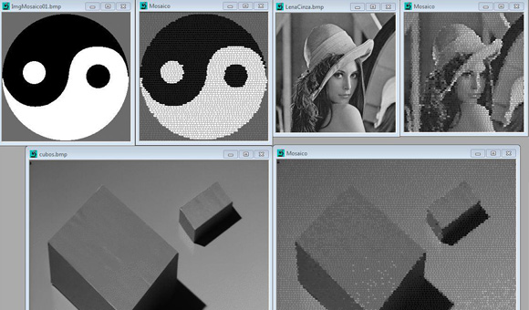

These are my pet projects that I wrote for fun. I'm fascinated with automation, so plenty of these projects are to automate something. Please note that some projects were made while I was studying a new programming language by myself, so they might not follow the best coding practices. If you find something that hurt your eyes, please let me know!

Panorama - Project written in my senior year. Given a set of consecutive images,
Technologies: abc
Panorama - Project written in my senior year. Given a set of consecutive images,
Technologies: abc